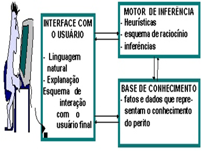
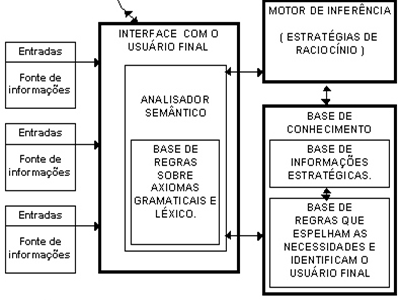

por Carlosfreitas - AlexandreBecker - GabrielPortilho
atualizado em 20/março/2018
ESTRUTURA BÁSICA DE UM SISTEMA ESPECIALISTA
A estrutura básica para um sistema especialista, é constituída por três elementos
fundamentais: base de conhecimento, motor de inferência e interface com o usuário.

ARQUITETURA PARA O SISTEMA ESPECIALISTA PARA GERENCIAMENTO DA INFORMAÇÃO (SEGI)
Um sistema de gerenciamento da informação, conforme mencionado anteriormente, deverá ser construído
a partir da integração dos seus elementos básicos: interface com o usuário, base do conhecimento e motor de inferência, que podem ser visualizados
no diagrama apresentado

Inteligência ArtificialO futuro das Coisaspor Carlosfreitas atualizado em 20/março/2018